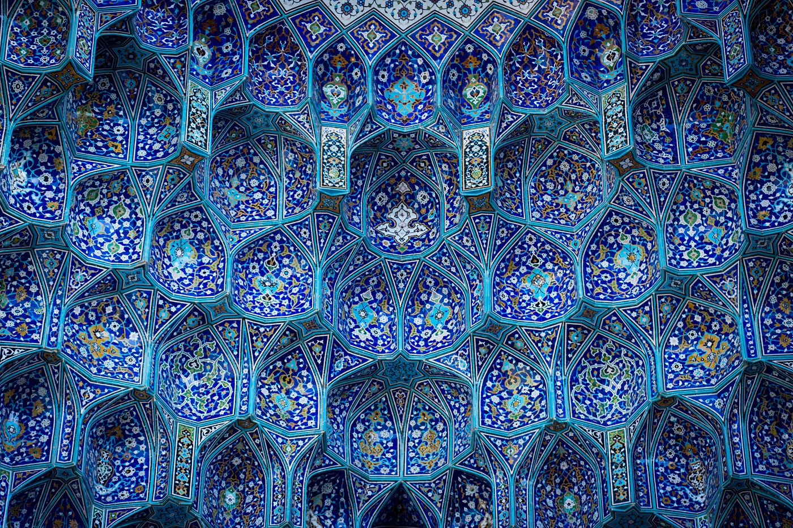

المُقَرْنَص
المُقَرْنَص (الجمع: مُقَرنَصات) من عناصر العمارة الإسلاميّة المميّزة لها. يشبه المقرنص الواحد -إذا أُخذ مفصولاً عن مجموعته- محراباً صغيراً، أو جزءً طولياً منه. وهو ذو أنواع وأشكال متعددة، ولا يُستعمل إلاّ متكاثراً متزاحماً بصفوف مدروسة التوزيع والتركيب، متجاورة متعالية، حتّى لَتبدو كلّ مجموعة من المقرنصات وكأنّها بيوت النحل أو أقراص الشَّهد.. تتلاصق خلاياها وتجمع بين عناصرها خطوط وكُتَل متناغمة، رياضيّة التصميم، متناهية في الدقة، تؤدي وظيفة معمارية محددة، ودَوراً زخرفياً جمالياً يتجاوز كلّ حدود، وكأنّها منحوتات «سُرْيالية» ذات مدلول رمزي وبُعد ما ورائي. مع المقرنصات لا تنتهي المساحات، بل يتصل بعض الجدران ببعض وبالسقوف والقِباب والشرفات، ولا يتوقف النظر عند حدّ، وكأنّها مرتبطة بالزخرفة التي لا بداية لخطوط زخارفها ولا نهاية. تُغطّي المقرنصات المجالات المقعّرة والتقاءَ السطوح الحادّة الأطراف في الأركان بين السقف والجدران وأسفل الشرفات في المآذن ورؤوس مداخل المنابر. وهي تقضي أيضاً على مناطق الانتقال المفاجئ من مربّع قاعدة القبّة إلى الشكل الدائري. وهي تهيمن بشكل خاص على الحنايا الركنية وسماء القباب وطاساتها الخارجية.
أنواع مقرنص
يمكن تقسيم مقرناص إلى أربع فئات من حيث الشكل:
- المقرنصات الأمامية: يقال أن المقرنصات لها موادها الخاصة حيث يقومون ببساطة وبدون أي حواف من الطوب أو الجبس بتزيين نهايات الأسطح الخارجية للمبنى وقوتهم عالية.
- الأخفاف المكدسة: هذه الأخفاف بالإضافة إلى المواد الأساسية المستخدمة في البناء مصنوعة من مواد مثل الجص والطوب والحجر التي تلصق بالمبنى وتستخدم على الأسطح الداخلية والخارجية للمبنى. تتكون هذه المقرنصات في الغالب من عدة صفوف (من صفين إلى خمسة أو أكثر) ولها ثبات معتدل.
- المقرنصات المعلقة: وهي تشبه مناشير الحجر الجيري المعلقة في الكهوف أو الهوابط وتتكون أكثر من لصق مواد مختلفة مثل الجص والفخار والبلاط وما في حكمها على الأسطح المقعرة داخل المبنى. هذا النوع من المقرنصات يبدو متدليًا وقليلًا من الثبات.
- أخفاف قرص العسل: كما يوحي اسمها ، فهي تشبه خلايا النحل وتبدو عمومًا كخلايا نحل صغيرة مكدسة فوق بعضها البعض. تشبه هذه المقرنصات إلى حد ما المقرنصات المعلقة